Clear Arrival TimeCall us and get a clear answer on when we can arrive.
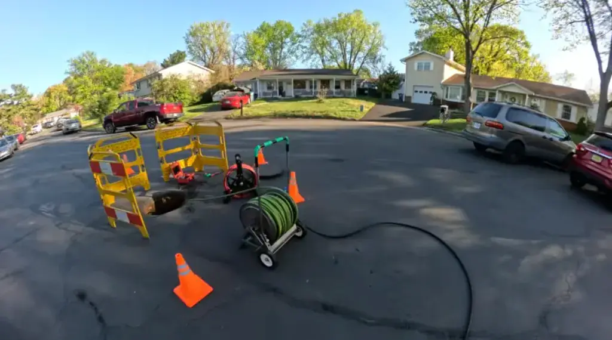
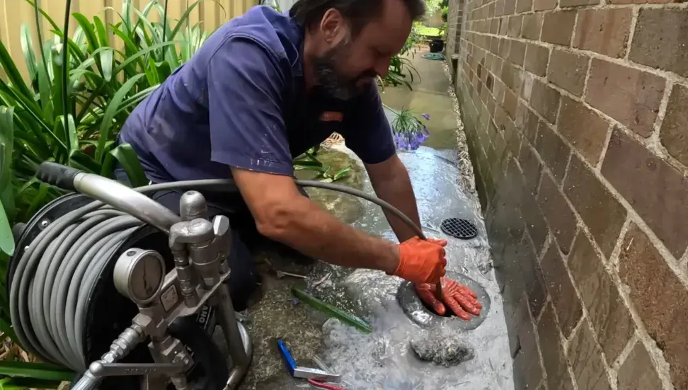
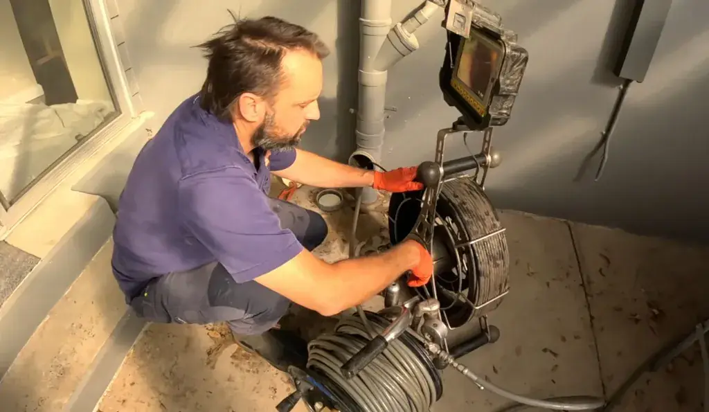
Drain Cleaning Naples, Florida
A clogged drain rarely fixes itself. We find the cause first, then clear it. A camera shows what is inside the pipe. Then we use a snake, high pressure water, or full sewer line work, based on what we see. We serve homes and businesses across Naples, from Old Naples to Lely Resort.
Experienced TeamTechnicians who share the video inspection and explain what is
going on.
Clear OptionsYou review the work and the quote first before giving the go ahead.
Clean FinishFloors covered, drain tested, and the work area left tidy.
Work BackedIf the same clog returns because of our work, we come back. Ask us
for the terms.
Drain Cleaning Services in Naples
Naples Drain Pros has served Naples homes and businesses since 2005. We open blocked lines at sinks, tubs, and floor drains, and we clean main sewer lines from Old Naples and The Moorings east toward Golden Gate.
Every job starts with a video inspection. You see the condition of the line, we explain why it backed up, and you get an exact cost upfront. If a snake does the job, we use a snake. If the pipe needs high pressure water or a repair, we say so and show you why.
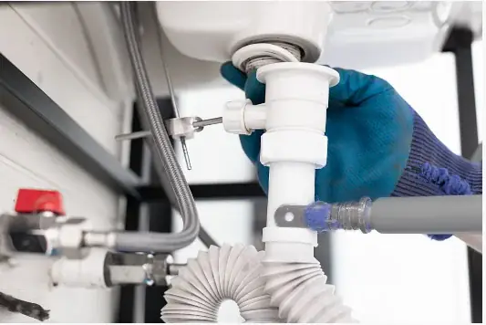
Our Services
Scheduled and urgent drain and sewer work for homes and businesses across Naples, Florida.
Sewer
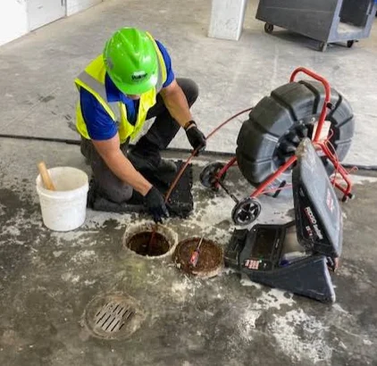
Sewer Cleaning
Clears the main line that carries waste out of your property. We cut roots, remove grease and buildup, and check that the pipe is open.
Explore Sewer Cleaning →
Cabling
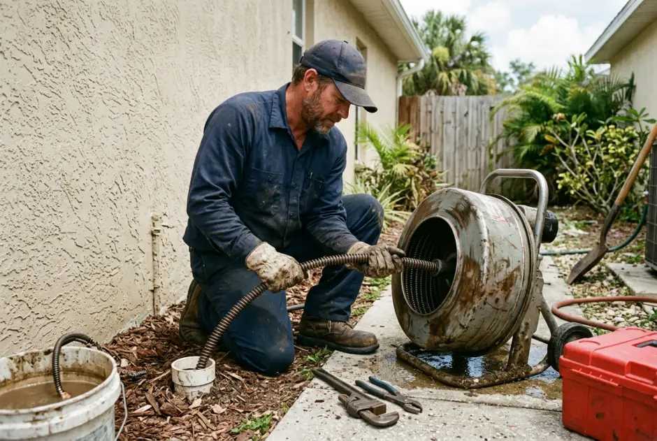
Drain Snaking and Cabling
A cable breaks through stubborn hair, sludge, and soft clogs in sinks, tubs, showers, and toilets. Good for a single blocked fixture.
Explore Snaking and Cabling →
Jetting
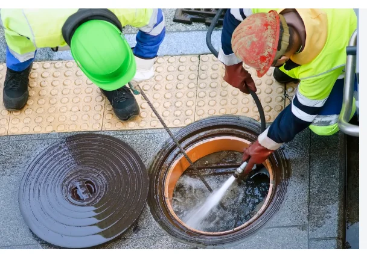
Hydro Jetting
High pressure water washes grease, mineral scale, sand, and roots off the pipe wall. Best for longer lines and repeat backups.
Explore Hydro Jetting →
Unclog
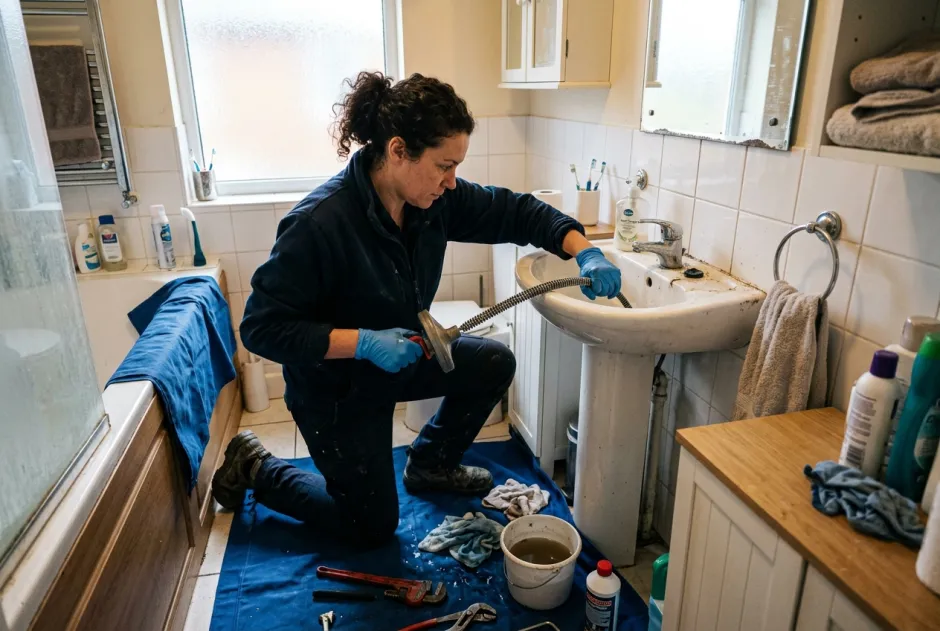
Clogged Drain Clearing
Opens blocked floor, shower, and laundry drains. We locate where the blockage sits, remove it, and test the flow before we leave.
Explore Drain Clearing →
Kitchen
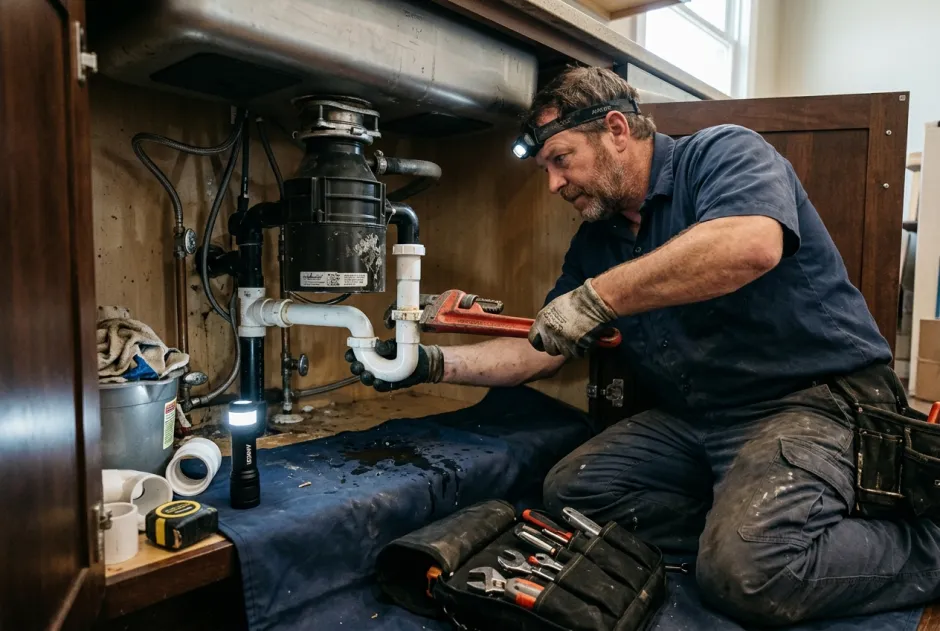
Kitchen Sink Drain Clog
Removes grease, food buildup, and disposal blockages from home and restaurant kitchens. We also show you what to keep out of the line.
Explore Kitchen Drain Help →
Leak
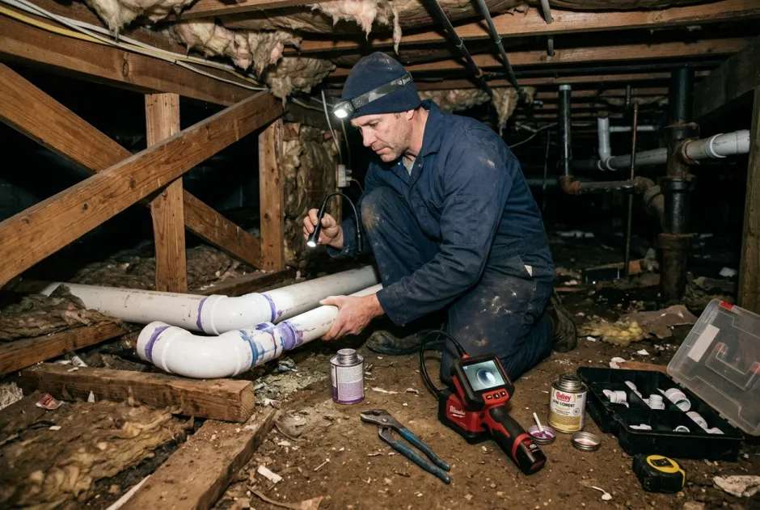
Drain Line Leak Repair
A pipe camera pinpoints the leak location, so we fix the exact spot. This helps stop slab damage, mold, and wet floors.
Explore Leak Repair →Not sure which service you need? Call our dispatch line and we will tell you where to start.
Call Dispatch: +1 (239) 688 0557Why Naples Homeowners Call Us
Every job begins with a pipe camera view, finishes with a drainage test, and comes with a clear estimate before work starts.
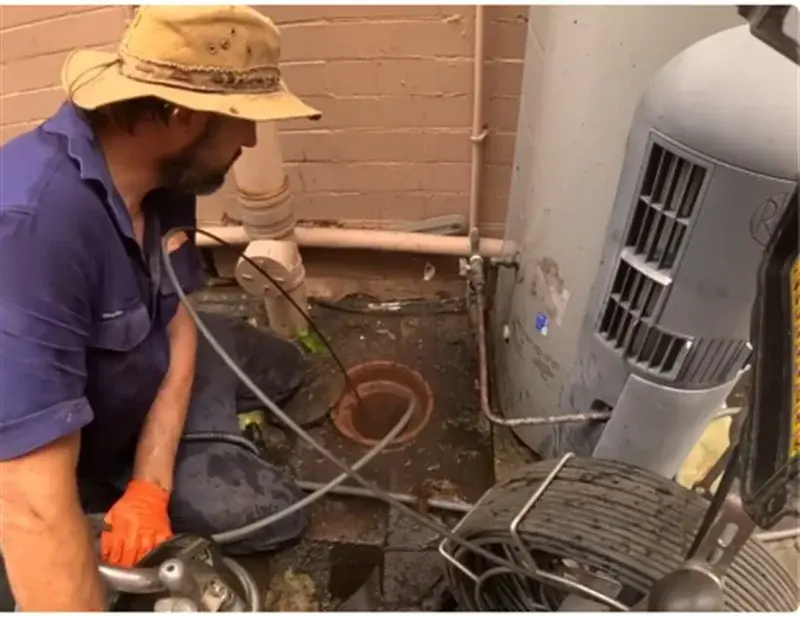
How a Visit Works
Whatever the problem, you know what happens next, what needs your approval, and how we confirm the fix worked.
Call and Plan
Tell us what is wrong: a clogged kitchen sink, a slow shower or tub, a dishwasher air gap leak, a wet yard, or a sewer backup. We book a time and tell you who is coming and when.
Inspect and Find the Cause
We check the drain and, where it applies, put a camera in the pipe. We look for roots, grease, a sag, a broken joint, or a leak, and explain what we see before we suggest any work.
Clear or Repair
We match the work to the cause:
- Snaking and cabling for sinks, showers, and tubs
- Hydro jetting for grease and buildup
- Sewer and mainline cleaning for the main line
- Drain pipe and drain line leak repair for damaged pipe
- French drain service for yard water
- Air gap repair for dishwasher leaks
You hear the price and approve it before we begin.
Final Check
We run water and confirm it flows. On main line jobs, we look again with the camera. Then we clean the work area and go over what we found.
Homes and Businesses
A slow drain at home is a hassle. A blocked line at a restaurant costs a day of sales. We plan each job around that difference.
Commercial Service
For kitchens, shops, offices, and apartment buildings in Naples. We work around your hours, and we know the county grease rules.
- Early morning and late night visits
- One area at a time, so you stay open
- Photos and notes you can hand to a manager
- Regular line checks before grease builds up
Residential Service
For houses, condos, rentals, and HOA homes. We explain the findings clearly so you can choose the best step for your home.
- We call before we arrive
- Shoe covers and drop cloths on every job
- A direct recommendation: open the line, repair the section, or replace it
- A short report for landlords and condo boards
Common Drain Problems We Fix
From a single slow sink to a blocked line under the yard, these are the problems Naples homes and businesses call us about most.
Clogged Kitchen Sink
Grease, food scraps, and disposal buildup stop water at the sink or send it back up. We clear the blockage and show you what to keep out of the line.
Slow Bathroom Drains
Hair and soap scum slow tubs, showers, and sinks long before they stop. We remove the buildup and check that the water runs freely again.
Sewer Backup and Odors
Gurgling, a sewer smell, or water coming up in a tub means the main line may be blocked. We find where the backup starts, then flush or snake the pipe until it drains.
Roots and Underground Blockages
Tree roots, a sagging pipe, or a broken joint can block a line you cannot see. We pinpoint the issue and explain whether snaking is enough or if the pipe needs repair.
Service Areas in Naples
We serve homes, condos, and businesses across Naples, from the shops of Old Naples to the beaches of Park Shore. Not sure if we cover your street? Check availability, or call and give us your address.
- Old Naples: Older homes and busy kitchens near Fifth Avenue South and Third Street South.
- North Naples: Family homes, rentals, and shopping areas near The Mercato.
- Pelican Bay: Large HOA communities and condos along the Tamiami Trail.
- Park Shore and The Moorings: Gulf side condos and homes close to the beach.
- Port Royal: Waterfront homes near Naples Bay, where storm season backups are a real concern.
- Naples Park: Single family homes and vacation rentals near Vanderbilt Beach and Delnor Wiggins Pass.
- East Naples: Older neighborhoods, condo buildings, and restaurants along the main roads.
- Pine Ridge: Large homes with long sewer lines and mature trees.
1234
Primary dispatch zoneResponse depends on current call
volume, technician availability, and required equipment.
Why Drains Clog in Naples
Most backups here trace back to a few causes. We find which one is in your line before we suggest a fix.
Roots
Ficus and palm roots push into joints in older clay and cast iron pipe. Big trees near the house are a common cause in older neighborhoods.
Grease and Wipes
Collier County Public Utilities says fats, oil, and grease cause most sewer blockages. Wipes sold as flushable do not break down like paper.
Scale, Sand, and Sags
Mineral scale narrows pipe walls over time. Storm runoff can wash sand into lines, and a sagging pipe holds waste in one spot.
Do I Have City Sewer or Septic in Naples?
Check your utility bill for a sewer charge. If you see one, you are on public sewer. If not, you may be on septic. Condo and HOA homes can pay sewer through the association, so ask yours. You can also call the City of Naples or Collier County Utilities. Knowing this first saves you from paying for the wrong fix.
Public Sewer
Waste flows to a public main. Who owns each part of the line depends on your utility, so ask before you pay for a dig.
Septic Tank
Waste goes to a buried tank and drain field. Some Naples neighborhoods, like Gulf Acres and Rosemary Heights, were on septic before the City added sewer lines.
Not Sure?
Do not pour drain chemicals or septic additives down the line. The EPA does not recommend septic tank additives.
What Happens to Naples Sewers During a Storm?
Heavy rain and storm surge can overload sewers and cut power to pump stations, which can push sewage back up into low drains. Use less water during a storm, and stop using water if it rises in a tub or shower. After the water drops, call a pro before you use the drains again.
Hurricane Irma, 2017
Collier County runs about 900 pump stations, and nearly all lost power. Sewage came up in some streets and homes.
Hurricane Ian, 2022
Flooding destroyed about 50 City of Naples sewer pumps, and some areas saw 8 to 10 feet of storm surge.
Before and After
Skip extra flushes, laundry, and the dishwasher during a storm. Afterward, sand and debris can pack a line. Ask your insurance agent about sewer backup coverage.
Fast Response When You Need It.
We get to you as quickly as we can. Weekends, holidays, and late nights are when drains tend to fail. Call, tell us what is happening, and we will give you the next open time and what to do while you wait.
Frequently Asked Questions About Naples Drain Cleaning
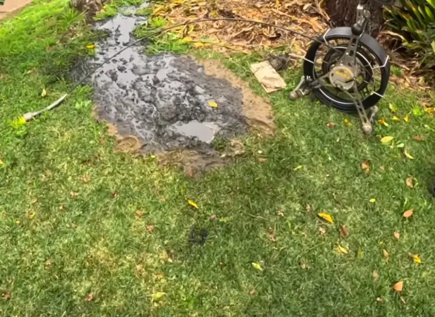
Still unsure? A dispatcher can help identify the safest immediate step and the right appointment type.
Speak with dispatchHow much does drain cleaning cost in Naples?
The total cost depends on which line is backed up, how deep the obstruction sits, the condition of the piping, and the time of the call. We inspect the issue first, then give you a firm written quote. You authorize the work only after you have reviewed the numbers.
What makes Naples Drain Pros a good choice in Naples?
We run a pipe camera first, so you see the exact issue before you spend money on a fix. We select the tool that matches the blockage, go over the inspection, and confirm the estimate before starting. We are licensed and insured, and you can ask for proof.
What are the signs I need my drains cleaned?
Slow sinks or tubs, gurgling after a flush, a sewer smell from a floor drain, or water in the shower when the washer runs. If the same backup keeps returning, or several fixtures act up at once, call us. That often points to the main sewer line.
How do I schedule a visit?
Call us or send the quote form. Tell us which drain is affected, how long it has been slow, and whether you have sewer or septic. We confirm an arrival window, and a technician arrives ready to conduct a video inspection.
Is emergency service available?
Yes, we take urgent backup calls. If sewage is coming up, stop using water, keep children and pets away, and call right away. Do not pour chemicals down the drain. They will not clear a backup and can harm your pipes.
What is the difference between snaking and hydro jetting?
A snake breaks through a soft clog at one fixture. Jetting uses high pressure water to wash grease, sludge, and roots off the pipe wall, so it suits longer lines and repeat clogs. It is not safe for cracked or fragile old pipe, so we inspect the line with video equipment first.
How often should drains and sewer lines be cleaned?
Most homes only need service when a drain slows down. Older properties with mature ficus or palm roots benefit from a periodic video inspection. Restaurants should clean grease lines on a regular schedule, and we can set that up.
Are chemical drain cleaners safe for pipes?
No. University of Maryland Extension says drain cleaners contain some of the most corrosive chemicals in a home, including lye and strong acids, and they can corrode metal pipe. Try a plunger or hand snake first, then call us if the clog stays.
Why does my drain smell after I come back from being away for months?
A dry trap is the most common cause. The water in a trap blocks sewer gas, and it can dry out in a closed home. Run water in every drain for a minute. If the smell stays, or drains are slow or gurgle, call us for a look.
How do I keep lanai and pool deck drains clear?
Clear leaves, sand, and debris off the grate often, especially before the rainy season. Pour a bucket of water into the drain to check that it flows. If water pools or drains slowly, the line may be blocked, so call us.
Backed Up Right Now?
Standing water, a gurgling toilet, or a sewer smell means something is blocked. Call us and we will send a technician. We inspect the line on screen, explain why it stopped flowing, and give you an upfront estimate before any work begins.
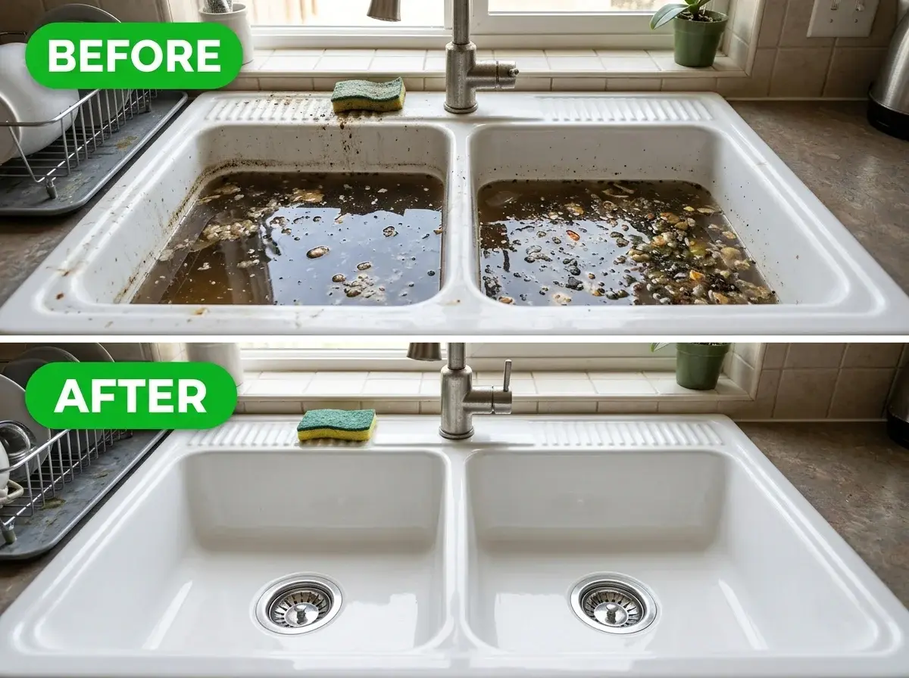
Get in Touch with Us
Call or email us about a clogged drain or a sewer backup. We reply as soon as we can.